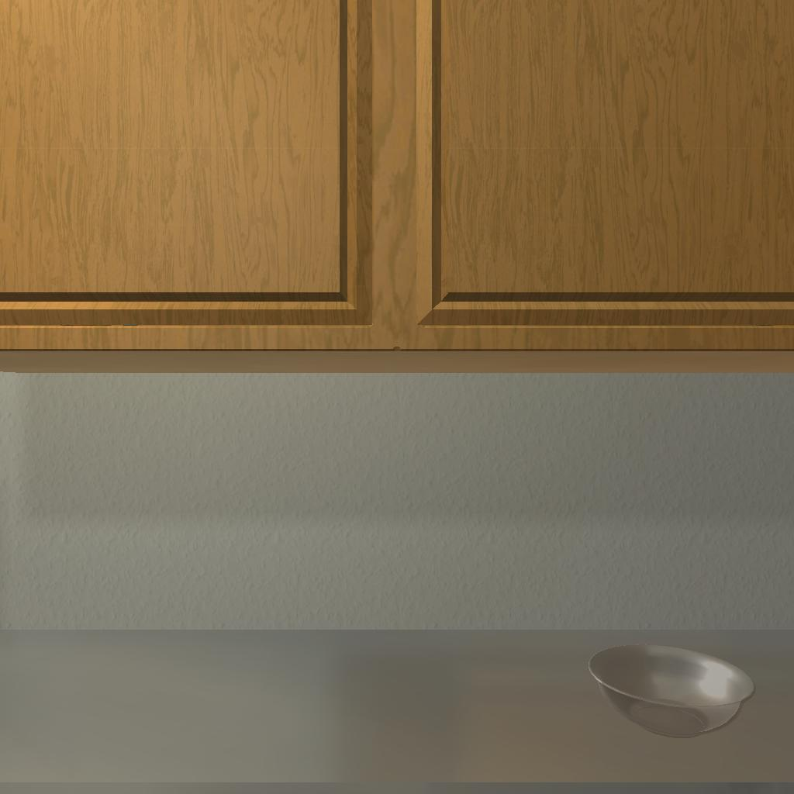

---------------------------------------------------------task: 22---------------------------------------------------------
--------------------------------------------------------------------------------------------------------------------------------------------------------------------
--------------------------------------------------------------------------------------------------------------------------------------------------------------------
Step:--------------------------------------------------------------------------7-------------------------------------------------------------------------------
----------------------------------------
VLM Prompt:
**Task**
Please perform as an embodied AI agent. Our final objective is to heat some egg and put it in countertop. Below is the plan for completing the task, the current observation, alongside historical data and admissible actions for the next step. Please determine the best action for the next step!
**Plan**
Below is a detailed step-by-step plan to complete the task.
1. Find an egg.
2. Pick up the egg.
3. Find a microwave.
4. Heat the egg with the microwave.
5. Find a countertop.
6. Place the heated egg on the countertop.
**Current Observation**
Displayed is an image capturing the current position of the agent.
**History Information**
Displayed are the previous observations with their corresponding actions.
Current State 1:
1. Place: Kitchen sink area
2. Step Index in Plan: 1
3. Objects: Egg, Fridge 1, Cabinet
4. Action: Go to fridge 1
Current State 2:
1. Place: At fridge 1
2. Step Index in Plan: 2
3. Objects: Egg
4. Action: Open fridge 1
Current State 3:
1. Place: At fridge 1
2. Step Index in Plan: 2
3. Objects: egg, loaf of bread, lettuce, bowl, two potatoes
4. Action: close fridge 1
Current State 4:
1. Place: Unknown location near a metallic surface, potentially a refrigerator or oven.
2. Step Index in Plan: 3
3. Objects: Egg, Appliance (unspecified, possibly a refrigerator or oven).
4. Action: Go to microwave 1
Current State 5:
1. Place: In front of the microwave
2. Step Index in Plan: 4
3. Objects: Microwave, egg
4. Action: Open microwave 1
Current State 6:
1. Place: Kitchen
2. Step Index in Plan: 4
3. Objects: Microwave, Plate, Egg (not visible)
4. Action: Close microwave 1
Current State 7:
1. Place: Microwave
2. Step Index in Plan: 4
3. Objects: Egg, Microwave, Utensils, Countertop
4. Action: Go to countertop 2
**Admissible Actions**
(1): go to cabinet 1
(2): go to cabinet 2
(3): go to countertop 1
(4): go to cabinet 3
(5): go to cabinet 4
(6): go to cabinet 5
(7): go to sink 1
(8): go to cabinet 6
(9): go to drawer 1
(10): go to drawer 2
(11): go to sinkbasin 1
(12): go to cabinet 7
(13): go to cabinet 8
(14): go to coffeemachine 1
(15): go to microwave 1
(16): go to cabinet 9
(17): go to cabinet 10
(18): go to drawer 3
(19): go to drawer 4
(20): go to garbagecan 1
(21): go to drawer 5
(22): go to cabinet 11
(23): go to cabinet 12
(24): go to cabinet 13
(25): go to cabinet 14
(26): go to stoveburner 1
(27): go to countertop 3
(28): go to stoveburner 2
(29): go to stoveburner 3
(30): go to stoveburner 4
(31): go to drawer 6
(32): go to cabinet 15
(33): go to cabinet 16
(34): go to cabinet 17
(35): go to cabinet 18
(36): go to toaster 1
(37): go to drawer 7
(38): go to countertop 4
(39): go to fridge 1
(40): take bowl 2 from countertop 2
(41): take ladle 1 from countertop 2
(42): take ladle 2 from countertop 2
**Analysis Guideline**
1. Analyze the **History Information** and determine our current step in the plan and our current place.
2. List all visible objects related to the task in the current observation.
3. Analyze the objects in the current observation based on the history and the requirements for the current step, and then determine if we can complete the step with the current observation.
4. Analyze and decide on the most appropriate action to take.
5. Summarize the analysis using the following format: "Analysis: [The summarization of the analysis], The Most Appropriate Action: (i which is the integer.): [Selected action]"
**Notes**
1. We must complete each step of the plan in order and cannot skip steps when the previous ones are not finished.
2. For "Go to" actions listed as "go to xxx [n]", interpret this as there are n distinct actions available: "go to xxx 1", "go to xxx 2", ..., "go to xxx n". Select one specific action from these options instead of using "go to xxx [n]".
3. If receptacles such as drawers, cabinets, and so forth are closed in the current observation, we may try to open them.
4. Pay attention to synonyms and ensure clarity in the terms used.
5. If there is no history available, we are at the first step and the current place is "Unknown".
6. The most appropriate action must be in the **Admissible Actions**, and we cannot generate a new action that is not in the **Admissible Actions**.
**Answer**
Please select the most suitable action by following the **Analysis Guideline**, keeping the above **Notes** in mind.
----------------------------------------
----------------------------------------
VLM Response:
Analysis: According to the history information, we are at step 4 of the plan, which is "Heat the egg with the microwave." The history indicates that we have already opened the microwave and placed the egg inside, followed by closing the microwave. The last action taken was "Go to countertop 2," suggesting the egg has been heated and we are now ready to move to step 5 of the plan, "Find a countertop." The current observation shows a countertop with a bowl on it, so we are likely at the correct location to complete step 5. There are no other visible objects related to the task in the current observation.
The Most Appropriate Action: (40): take bowl 2 from countertop 2
----------------------------------------
----------------------------------------
>>> Refine VLM Response and Get Pure Action: take bowl 2 from countertop 2
----------------------------------------
-----------------------------------------------------------------
Running time: 15.619955778121948 seconds
Total Money: 10.889119999999993
-----------------------------------------------------------------
-----------------------------------------------------------------
Summarization Prompt:
**Context**
Analysis: According to the history information, we are at step 4 of the plan, which is "Heat the egg with the microwave." The history indicates that we have already opened the microwave and placed the egg inside, followed by closing the microwave. The last action taken was "Go to countertop 2," suggesting the egg has been heated and we are now ready to move to step 5 of the plan, "Find a countertop." The current observation shows a countertop with a bowl on it, so we are likely at the correct location to complete step 5. There are no other visible objects related to the task in the current observation.
The Most Appropriate Action: (40): take bowl 2 from countertop 2
**Summary Format**
1. Place: [Specify the current location]
2. Step Index in Plan: [Dispkay the current step number in the plan before taking the current action]
3. Objects: [List the objects relevant to the task]
4. Action: [Describe the most appropriate action without the "(x)" and keep the integer of the object]
Please analyze the **Context** and summarize the analysis using the **Summary Format**.
-----------------------------------------------------------------
-----------------------------------------------------------------
Summarization Response:
1. Place: Countertop 2
2. Step Index in Plan: 5
3. Objects: Bowl
4. Action: Take bowl 2 from countertop 2
-----------------------------------------------------------------
-----------------------------------------------------------------
Text Observation:You pick up the bowl 2 from the countertop 2.
-----------------------------------------------------------------
UNSUCCEED